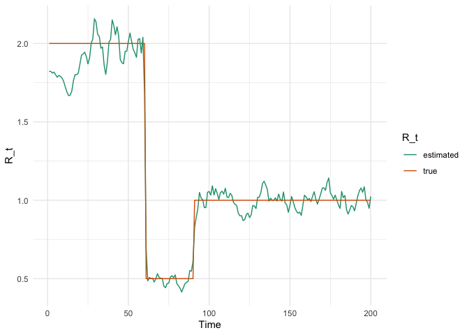

The goal of epidp is to allow covariate information to inform estimates of the time-varying reproduction number, .
Installation
You can install the development version of epidp from GitHub with:
# install.packages("devtools")
devtools::install_github("ben18785/epidp")Example
Step function in
We first generate case data assuming a step function for .
library(epidp)
library(ggplot2)
library(dplyr)
#>
#> Attaching package: 'dplyr'
#> The following objects are masked from 'package:stats':
#>
#> filter, lag
#> The following objects are masked from 'package:base':
#>
#> intersect, setdiff, setequal, union
library(magrittr)
library(purrr)
#>
#> Attaching package: 'purrr'
#> The following object is masked from 'package:magrittr':
#>
#> set_names
library(tidyr)
#>
#> Attaching package: 'tidyr'
#> The following object is masked from 'package:magrittr':
#>
#> extract
rt_fun = function(t){
if(t <= 60)
R = 2
else if (t <= 90)
R = 0.5
else
R = 1
R
}
# simulation parameters
nt <- 200
mean_si <- 6.5
sd_si <- 4.03
i_0 <- 10
# data frame of outputs
epidemic_df <- simulate_renewal_epidemic(rt_fun, nt, mean_si, sd_si, i_0)
# plot
transform_factor <- 300
epidemic_df %>%
select(-c(w_dist, lambda_t)) %>%
mutate(R_t = R_t * transform_factor) %>%
pivot_longer(c(i_t, R_t)) %>%
ggplot(aes(x = t, y = value, colour = name)) +
geom_line() +
scale_y_continuous(
name = "Incidence (i_t)",
sec.axis = sec_axis(~ . / transform_factor, name = "Reproduction Number (R_t)")
) +
labs(x = "Time") +
theme_minimal() +
scale_color_brewer("Series", palette = "Dark2")We now use a Stan version of EpiFilter to estimate the maximum a posteriori estimates of and overlay these on top of the actual values. Note, these estimates do not have uncertainty associated with them but the benefit of this is that estimation is instantaneous. The estimates are close to the actual values after an initial period when case counts are low.
# fit model
fit <- fit_epifilter(
N=length(epidemic_df$i_t),
C=epidemic_df$i_t,
w=epidemic_df$w_dist,
is_sampling=FALSE,
as_vector=FALSE
)
# plot
R <- fit$par$R
epidemic_df %>%
mutate(estimated=R) %>%
rename(true=R_t) %>%
select(t, estimated, true) %>%
pivot_longer(c(estimated, true)) %>%
ggplot(aes(x=t, y=value)) +
geom_line(aes(colour=name)) +
scale_color_brewer("R_t", palette = "Dark2") +
ylab("R_t") +
xlab("Time") +
theme_minimal()
Contributing guidelines
We welcome contributions from collaborators. Before doing so, we ask that you read our contributing guidelines section.